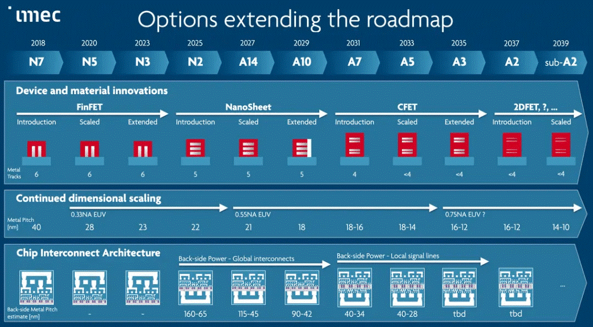
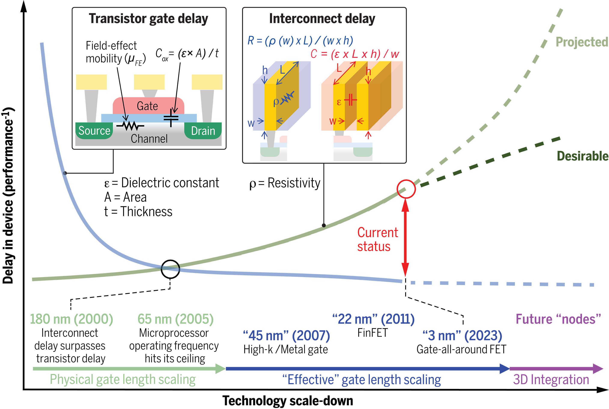
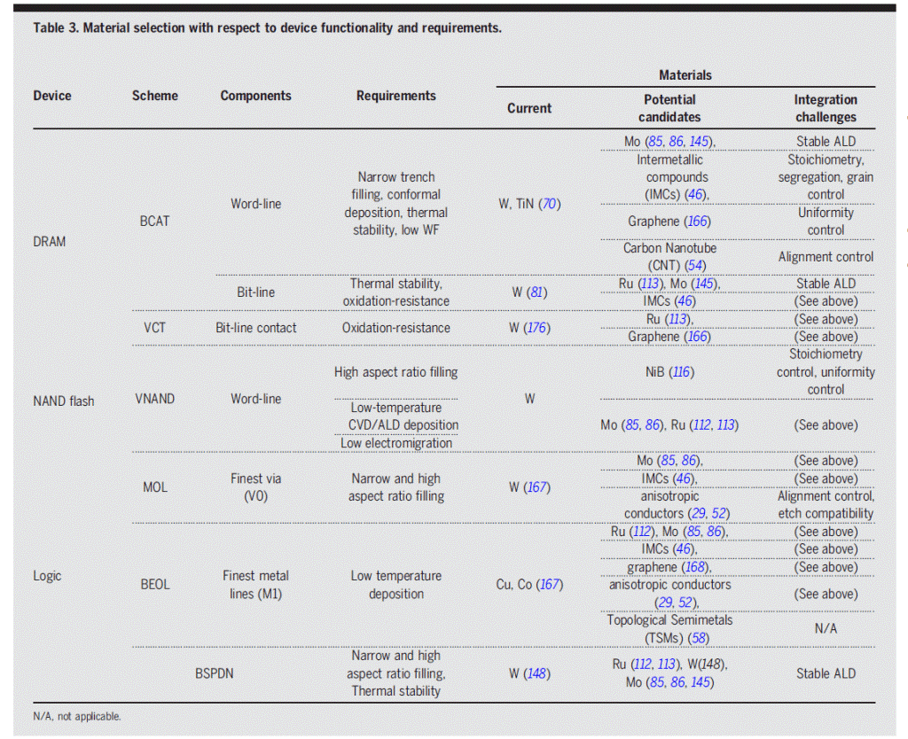
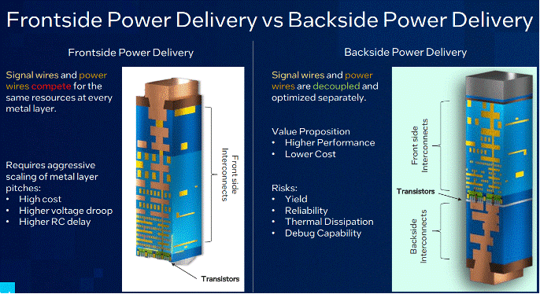

Core Foundation Technologies Under Development for Next-Generation Leading-Edge Nodes
Advanced chip manufacturing depends on intertwined progress across physics, chemistry, materials science, electrical engineering, and mechanical engineering. As transistor scaling becomes harder to sustain, the next generation of leading-edge nodes will require breakthroughs across multiple enabling technologies in parallel.
Advanced chip manufacturing is one of the most complex manufacturing processes, built on frontier advances in physics, chemistry, materials science, electrical engineering, and mechanical engineering. From the 1970s to the present, the number of transistors on a microchip has doubled roughly every 18-24 months, a trend known as Moore's Law. This progress has been driven mainly by increasing transistor density. However, continued scaling has slowed as the industry faces major constraints from lithography resolution and interconnect delay.
The invention of EUV lithography, in particular, has enabled the semiconductor industry to innovate at the transistor, chip, and system-integration levels, thereby extending Moore's Law. Nevertheless, future leading-edge node development will require other technologies to advance in parallel, so that continued node scaling can remain compatible with the performance-power-area-cost benefit.

Interconnects are more critical to IC performance than ever before. As ICs continue to scale down, the interconnects between transistors exhibit significant resistance-capacitance (RC) delay, which can exceed transistor gate delay and dominate signal propagation delay. At the same time, interconnect-related losses contribute substantially to heat generation in leading-edge nodes. Potential solutions to interconnect delay include the application of new interconnect materials at the die level, architectural innovations such as backside power delivery, and advanced cooling technologies such as embedded microfluidic cooling and TSV-assisted thermal paths.



High-numerical-aperture EUV can further improve lithography resolution at the 13.5 nm wavelength. From a chemistry and materials perspective, photoresists are at the center of this development. While chemically amplified resists (CARs) remain the mainstream option, metal-oxide resists (MORs) and dry resists are under development to enable better pattern fidelity at extremely tight pitches.
Table 1. Comparison of CAR, MOR, and dry resist approaches for advanced lithography.
| Dimension | CAR (Chemically Amplified Resist) | MOR (Metal-Oxide Resist) | Dry Resist |
|---|---|---|---|
| Basic concept | Organic resist platform where a small amount of photogenerated acid catalyzes a larger chemical change during post-exposure bake. It has been the mainstream resist architecture through DUV and into EUV. | Metal-containing or metal-oxide-based resist chemistry, often built around metal-oxo clusters or related structures, designed to improve EUV absorption, etch resistance, and fine-pitch performance. | Resist deposited and processed in a mostly dry flow rather than the classic spin-coat and wet-develop flow. Lam's Aether is the highest-profile current example. |
| Current maturity | Most mature and incumbent. CAR remains the reference platform the industry knows how to manufacture, tune, and qualify at scale. | Emerging production technology. MOR is no longer just a lab idea and is being positioned for current single-patterning EUV HVM and future High-NA. | Earlier than CAR, but moving into serious industrial validation. Aether is already in advanced DRAM production and is being pushed toward sub-1 nm High-NA logic flows. |
| Main strengths | Deep ecosystem maturity, existing fab know-how, broad compatibility, and proven manufacturability. | High EUV absorbance, strong etch selectivity, local uniformity, and track compatibility. | Better pattern fidelity and fewer process steps, with the potential to maintain scaling without adding costly complexity. |
| Main weaknesses and risks | The classic EUV tradeoff among resolution, line-edge and line-width roughness, and sensitivity remains a challenge, along with stochastic defects at very small dimensions. | Still working through full manufacturability questions, including sensitivity, roughness, defectivity, and broader pattern flexibility. | Less established ecosystem, more dependence on integrated tool and process adoption, and tighter coupling to deposition/etch hardware workflows rather than a simple material swap. |
Beyond interconnect- and lithography-focused development, there are also efforts to replace silicon channels with 2D materials in future devices. However, major challenges remain in crystal growth, doping, and gate-stack integration, and the technology is still at the laboratory research stage. Current roadmaps target potential adoption around the A2 node.
References
- 2D-Material Based Devices in the Logic Scaling Roadmap | imec
- Addressing Interconnect Challenges for Enhanced Computing Performance | Science
- Thermal Management of 3-D Heterogeneously Integrated Microelectronics: Challenges and Future Research Directions | Communications Engineering
- Backside Power Delivery Gears Up for 2nm Devices